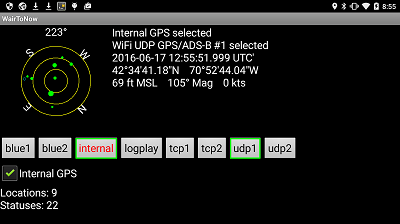
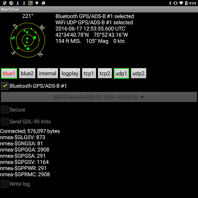
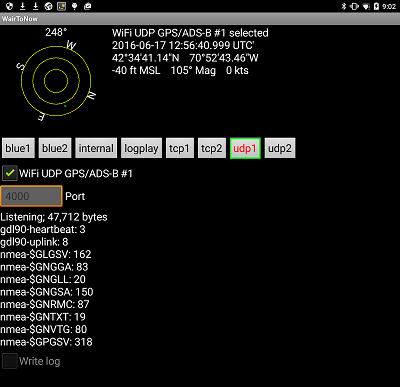

Sensors Page
This page is used to select which sensors the app uses to tell what is happening in the
area. There are four main sources to select from:
- Internal GPS - enables using the Android device's internal GPS receiver to
determine position information.

- Bluetooth GPS/ADS-B - enables receiving GPS and/or ADS-B information from an
external device over a Bluetooth connection. There are two selections available so
you can have two bluetooth devices (eg, one GPS and one ADS-B).
- The very first time you are going to use a particular device with this
Android, you must pair it by going to the Android's settings page, then
find Bluetooth (possibly under Wireless & Networks). You may then have to
click some button to get the new device to show up. Then follow the prompts
to get it to pair up. Once successfully paired, it does not need to be
paired up again.
- Once the device is paired up, select it from the (select) box. If
the device isn't listed there, try clicking the Refresh button at
the bottom of the selection box.
- The Secure checkbox is provided for those devices that require a
secure connection. If you aren't sure which you need, try one then the
other.
- Once the device is selected and you have set the Secure checkbox
one way or the other, check the checkbox by the Bluetooth GPS/ADS-B
message and it should connect assuming it is in range and operating.
- Bluetooth can be picky about connecting so you may have to restart the app
after a connection failure to get it to work. To restart the app, click on
the Android's menu button then select Exit then re-open the app.
It may also help to turn the device you are trying to connect with off then
back on.
- Once the device starts sending data to the app, the status message below
the Secure checkbox will start counting the number of bytes
received.

- WiFi UDP GPS/ADS-B - enables receiving GPS and/or ADS-B information from an
external device over a WiFi UDP port. More than one external device can send
information to the app at a time using the same UDP port. There are two selections
available so you can have two different UDP ports if necessary.
- Enter the port number your device will be sending on in the port box. For
example, Stratux seems to like port
4000.
- Check the checkbox next to the WiFi UDP GPS/ADS-B message and it
should start listening for inbound packets.
- There is no connection as such as there is with Bluetooth or TCP, but the
status message below the port number box should start counting bytes as it
receives packets.

- WiFi TCP GPS/ADS-B - enables receiving GPS and/or ADS-B information from an
external device over a WiFi TCP connection. More than one external device can send
information to the app at a time using the same TCP port. There are two selections
available so you can have two different TCP ports if necessary.
- Enter the port number your device will be sending on in the port box.
- Check the checkbox next to the WiFi TCP GPS/ADS-B message and it
should start listening for inbound connections.
- The status message box below the port number will indicate how many inbound
connections have been established, so you can see if your device has
connected or not.
NOTE: You should only have just one source of GPS information enabled at a time so
the app doesn't receive closely spaced (distance-wise and time-wise) readings.
The Bluetooth and WiFi types accept dump1090, dump978, GDL-90 and NMEA packets in any mix.
- dump1090 is a program available on the Internet that decodes ADS-B packets
received from an SDR (software defined radio). The author has successfully used it
with a Linux-based Raspberry PI. The computer
(Raspberry PI) runs the dump1090 program
then pipes the data to an Android WiFi TCP port using nc (netcat) or
similar program. It can either literally use WiFi or can use adb forward
to send the data over a USB cable between the laptop and the Android device as the
WiFi may be unreliable.
- dump978 is a program available on the Internet that decodes ADS-B packets
received from an SDR (software defined radio). The author has successfully used it
with a Windows-based laptop and with a Linux-based Raspberry PI. The computer
(laptop or Raspberry PI) runs the rtl_sdr and dump978 programs
then pipes the data to an Android WiFi TCP port using nc (netcat) or
similar program. It can either literally use WiFi or can use adb forward
to send the data over a USB cable between the laptop and the Android device as the
WiFi may be unreliable. WairToNow currently processes basic, long and uplink
message types.
- GDL-90 is a protocol used by ADS-B equipment to send ADS-B information to
display devices. WairToNow currently processes basic, heartbeat, long, ownship,
ownship/geoalt, traffic, and uplink messages.
- NMEA is a protocol used by GPS equipment to send GPS position information to
display devices. WairToNow currently processes GGA, GSV, RMC, RTM and VTG messages.